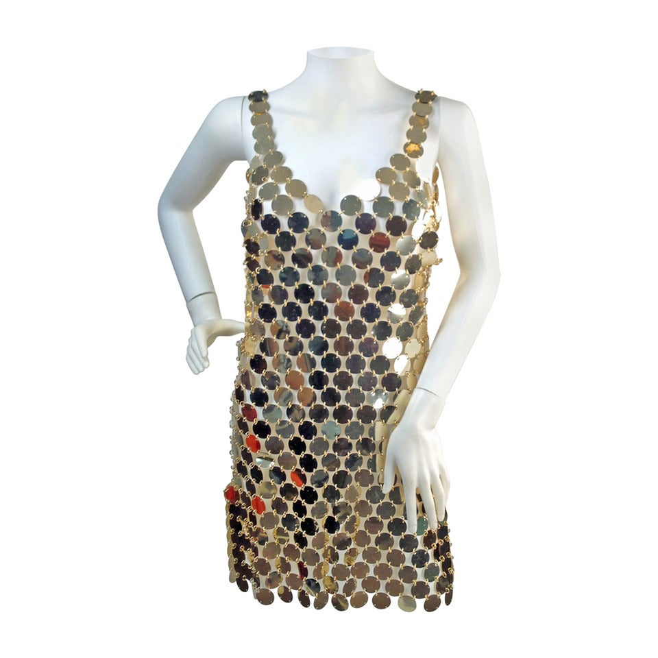
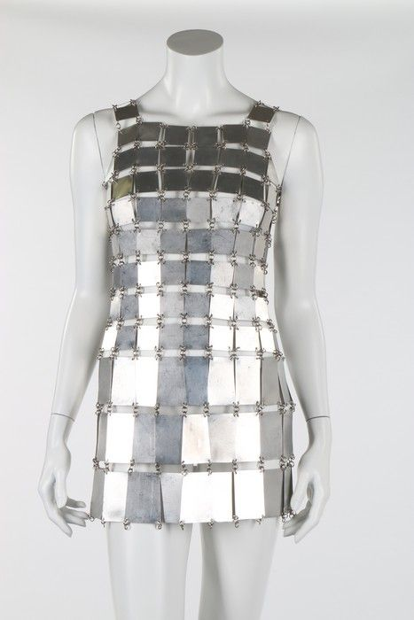
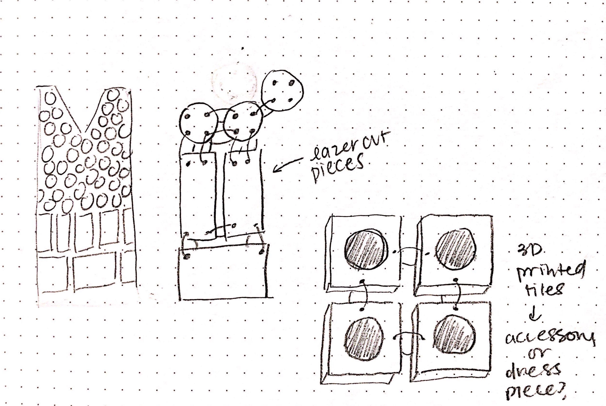

Final Project Proposal
  
Concept
I am recreating Paco Rabanne’s iconic metallic disc dress using cardboard discs of various shapes and sizes.
This product is intended to be displayed rather than worn.
In my materials research, I was limited by available materials and cost. I decided to use cardboard as the primary material because it is easy to access and I can recycle the materials.
Throughout the quarter, I used simple shapes to create screen block pattern designs from mid-century design and architecture. When I lasercut screen block patterns for assignments 1, 2, and 3, I was left with so many cut-out pieces (negative space on the pattern) that I didn’t want to throw away! I was reminded and inspired by Rabanne’s use of unconventional materials in design and want to create my own wearables inspired by the Spanish designer’s work.

Tasks
• Modeling the chips/variations of the chips in Rhino and Grasshopper• Lasercutting the dress chips
• 3D printing accessories
Timeline
• May 30-31: CAD modelling chips and variations• June 1: laser cutting
• June 2: 3D printing
• June 3 - June 6: assembly, adjustments
• DUE: June 7
Bill of Materials
Based off of research of old patterns to Rabanne’s dresses, I should have approximately 750 1” chips. This number is not exact, because I will have chips of various sizes and shapes.I have already sourced materials except for the 3D printer filament. I will purchase filament if our shared supplies run low.
Images:
1stdibs Fashion Faim